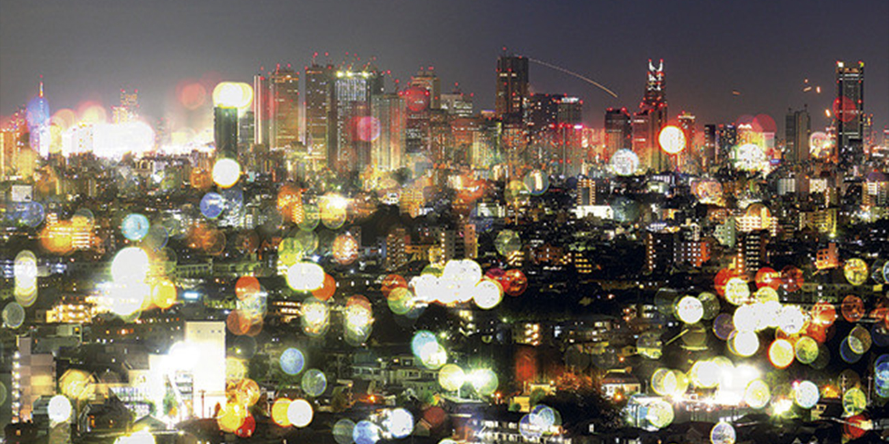

CG合成特效
Tip1:创建一个新的合成组，将预置设为：HDV/HDTV 720（持续时间：3秒）。
Tip2:在项目面板上右击选择导入--文件，将新的素材图片导入到项目面板。
Tip3:将素材图片从项目面板拖拽到时间线的图层，右击选择适配到合成宽度。
Tip4:在我们的图层上右击选择效果--模拟仿真--碎片，快速为图片添加碎片动画。
Tip5:默认的效果是以线框预览的，因此我们可以将它选择为渲染模式。
Tip6:拖拽时间线播放头，在合成面板预览动画效果。
Tip7:将我们做好的动画，通过制作影片命令输出。（Ctrl+M）

Tip8:最终效果如下图所示，好了该你上手制作了！！